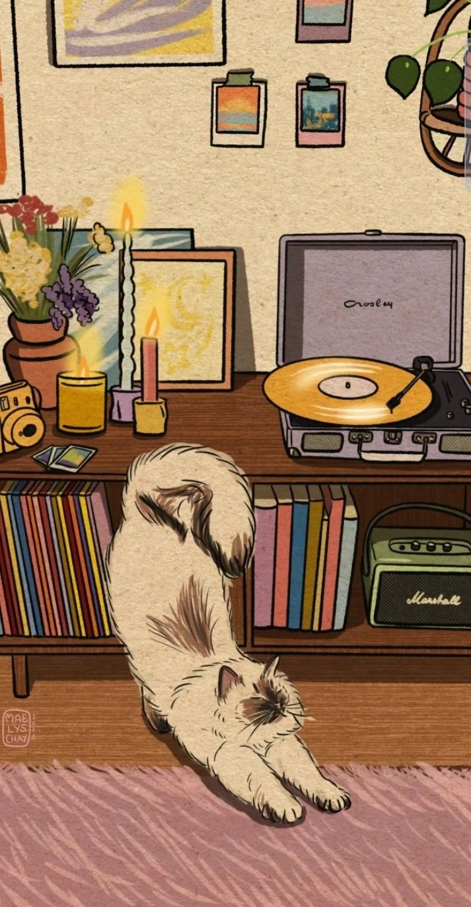
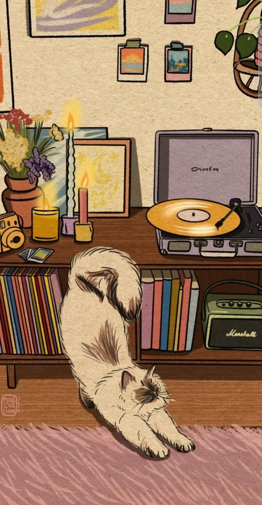
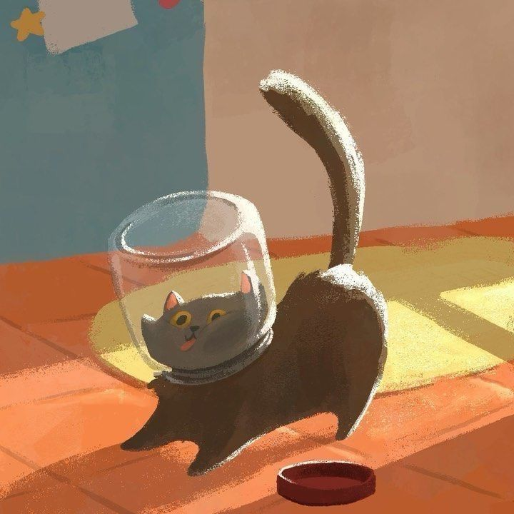

hola, estoy de regreso :))
hola, de nuevo :))
hola
hi
hi
hi
Estoy emocionada de retomar front
¿qué debería crear ésta ocasión?
Hablemos de gatos
Características sobre estos seres fantásticos
Existen más de 500 millones de gatos domésticos en el mundo de 40 razas.
Los gatos hacen unos 100 sonidos y los perros solamente 10.
Son los animales con mayor oído.
Un gato que nace con un ojo azul normalmente es sordo de la oreja más cercana.
El gato más longevo vivió 34 años.
 

Razas de gatos
- Abisinio
- Angora Turco
- Azul Ruso
- Bengala
- Bosque de Noruega
¿sabías esto de los gatos?
- Un gato pasa de media 2/3 del día durmiendo.
- ¡Eso significa que en 9 años de vida, sólo está despierto 3 años!
- Cuando un gato persigue una presa, a diferencia de un perro o humano, mantiene la cabeza siempre hacia abajo.
- Los gatos no saborean lo dulce.

Mira aquí la galería
Ver aquí
¿Cómo cuidar un gato?
- Darle de comer todos los días
- Hacerle mimos
Adopta un gatito
Click para adoptar
Mi primer sitio web, hecho con amor por Ali, en el bootcamp de tecnolochicas PRO